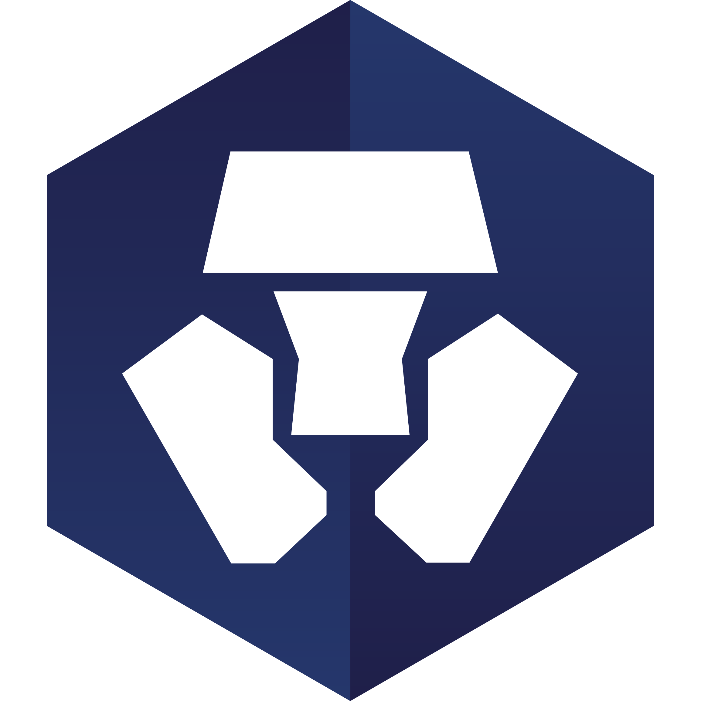
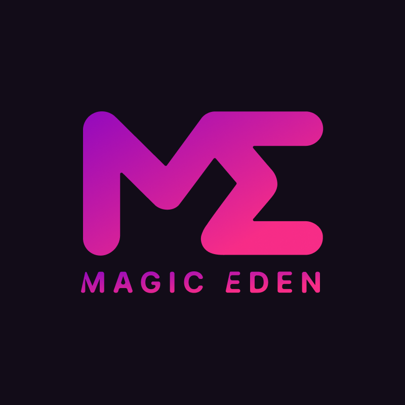
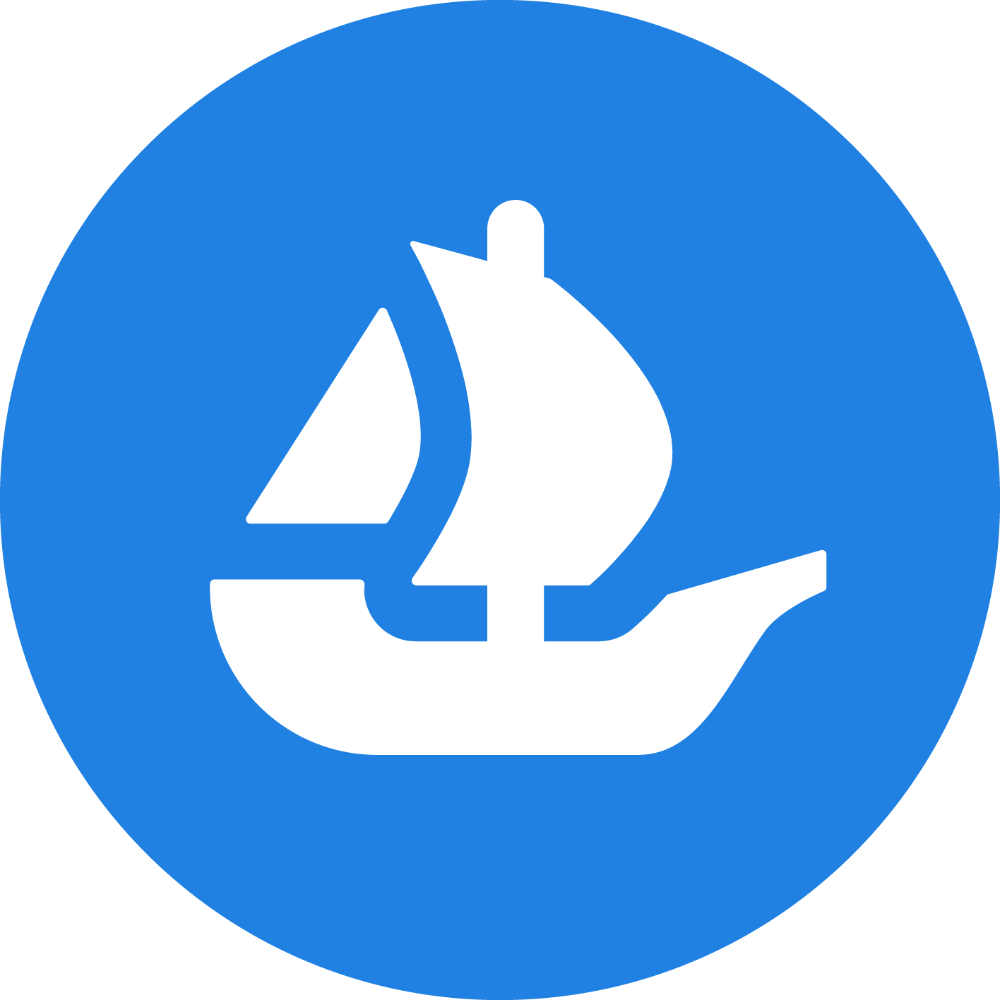
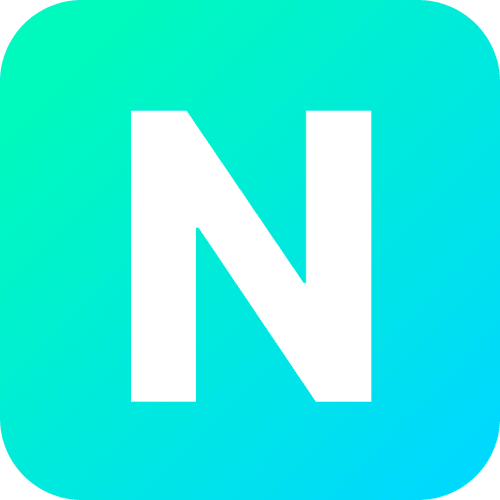

Cele mai populare NFT Marketuri de unde poti achizitiona primul tau NFT!
Crypto.com NFT Marketplace
Crypto.com este una dintre cele mai vechi și mai utilizate piețe NFT. Este, de asemenea, una dintre cele mai largi, hosting orice tip de NFT, de la artă la muzică, fotografie și obiecte de colecție sportive. Gândiți-vă la OpenSea ca la Amazon pentru piețele NFT. Într-adevăr, stochează totul. Acest lucru este susținut de sprijinul său pentru mai multe peste 150 de jetoane de plată criptomonede. OpenSea este ușor de utilizat și vă puteți configura un cont gratuit și începeți să bateți, să vindeți și să navigați în câteva minute.
Binance NFT
Binance NFT este unul dintre cele mai mari schimburi de criptomonede, iar Binance NFT al său devine una dintre cele mai mari piețe NFT din jur. De asemenea, este susținut de propriul blockchain. Din aceste motive, Binance NFT este considerată una dintre cele mai pregătite piețe NFT pentru viitor. Dimensiunea și dimensiunea sa înseamnă că această piață poate oferi parteneriate exclusive și evenimente pe care ceilalți le pot invidia. Dacă aveți jetoane Binance (BNB), accesul la piață este și mai ușor și puteți folosi ETH, BNB și BUSD pentru a licita. Puteți depune ETH sau BSC NFT dacă doriți să vindeți.
MagicEden
MagicEden este una dintre cele mai vechi și mai utilizate piețe NFT. Este, de asemenea, una dintre cele mai largi, hosting orice tip de NFT, de la artă la muzică, fotografie și obiecte de colecție sportive. Gândiți-vă la OpenSea ca la Amazon pentru piețele NFT. Într-adevăr, stochează totul. Acest lucru este susținut de sprijinul său pentru mai multe peste 150 de jetoane de plată criptomonede. OpenSea este ușor de utilizat și vă puteți configura un cont gratuit și începeți să bateți, să vindeți și să navigați în câteva minute.
OpenSea
OpenSea este una dintre cele mai vechi și mai utilizate piețe NFT. Este, de asemenea, una dintre cele mai largi, hosting orice tip de NFT, de la artă la muzică, fotografie și obiecte de colecție sportive. Gândiți-vă la OpenSea ca la Amazon pentru piețele NFT. Într-adevăr, stochează totul. Acest lucru este susținut de sprijinul său pentru mai multe peste 150 de jetoane de plată criptomonede. OpenSea este ușor de utilizat și vă puteți configura un cont gratuit și începeți să bateți, să vindeți și să navigați în câteva minute.
Nifty Gateway
Nifty Gateway a facilitat vânzarea unora dintre cei mai populari artiști digitali, cum ar fi Beeple și cântărețul/muzicianul Grimes. Este o platformă de curatare a artei alimentată de schimbul criptografic Gemini. NFT-urile, cunoscute sub numele de Nifties, sunt construite pe Ethereum.Pe lângă faptul că este o platformă organizată, Nifty Gateway găzduiește și orice NFT achiziționat, ceea ce înseamnă că NFT-urile nu sunt stocate în propriul portofel, ci sunt de fapt stocate pentru tine de Nifty Gateway și Gemini.